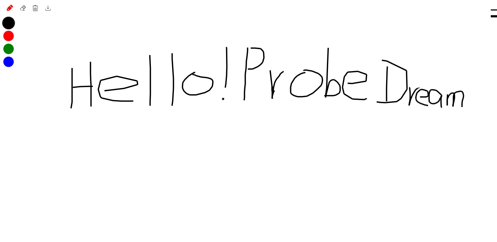

项目经历
cnode社区

CSS之可爱皮卡丘

Canvas之精美小画板
- 项目介绍: 这是一个采用原生JS开发的一个精简小画板,主要利用的是HTML5 Canvas API,是我在学习Canvas当中写的一个小工具, 在PC上面画画的同时,还可以在手机端上面同样的体验到画画的乐趣,并且还支持更换颜色和删除下载等功能!
- 用到的技术栈:ES6/Canvas
- 项目预览: Canvas之精美小画板
- 项目源码: Canvas之精美小画板
华为Music

-
项目介绍:
这是一个采用了原生JS写的高仿华为music的移动端应用,本项目采用的是Parcel作为打包工具,并且使用了Scss和Babel
分别作为CSS拓展语言使用,以及ES6转义的使用!其中里面的素材大部分都是从IconFont里面获取的, 其中该项目中比较难的难点就是
1:中间歌词滑动进行切换歌词的显示方式 其中是通过自己封装手势库进行处理的 然后根据滑动的像素进行class的切换达到最终效果!
2:歌曲中歌词的滚动 根据时间对应的时间戳进行滚动 通过regex 正则表达式将时间戳转换成毫秒然后与之对应的歌词 当时间戳离当前歌词比较近的时候就进行切换!
3:歌词进度的显示 当前歌曲的时间/歌曲总时长 拿到百分比之后对应的进度条以百分比的形式设置值!
- 用到的技术栈:ES6/Parcel/SCSS/Babel/SVG
- 项目预览: 华为Music
- 项目源码: 华为Music
beautiful-Navigation

- 项目介绍: 这是一个采用原生JS写的一个美丽导航栏,当时是我学JavaScript的时候写的一个小项目,对我的启发还是蛮大的, 其中最主要的就是运用到了数据结构方面的知识和监听事件的运用通过更改对应的键盘来显示不同网站的Logo,并且通过监听不同的按钮来进行网页跳转操作!
- 用到的技术栈:ES5
- 项目预览: beautiful-Navigation
- 项目源码: beautiful-Navigation
关于我
熟练使用HTML/DIV+CSS的页面布局并且能够根据设计图像素级完成界面制作
熟悉 HTML 5 及语义化，了解 Canvas 动画制作，掌握 CSS 3 动画、过渡效果等常用技术熟悉原生 JavaScript，会使用 ES6+ 常用规范，了解 TypeScript，了解 jQuery 常用 API 及思想
熟悉 Vue 常用功能，理解如生命周期、组件、虚拟 DOM、数据响应式等概念，能够使用 Vue 全家桶开发项目，对 React 有一定了解
熟悉模块化、工程化开发流程，能够配置 Webpack
有移动端开发经验，会使用REM、vw/ vh、响应式 等技术制作适配手机设备的页面
了解 HTTP 相关知识，了解常见的 Web 性能优化方案
了解 Node.js，能够开发简单的后台服务器
熟练使用 VsCode、WebStorm、Sass、Git 等开发工具
个人经历
2019年7月毕业于九江职业技术学院,在校期间成绩优异,曾多次参加学校相关专业技能比赛,综合成绩该专业5%
曾获得国家励志奖学金和多次班级奖学金
在校期间,因为本专业是软件工程专业,业的也是后端的知识,因此对Web的热爱不仅仅是学习Java的时候,课外实践通过网课
,书籍等渠道学习计算机领域的知识,2018年9月左右开始学习Web前端
热爱编码,喜欢开源社区的文化和底蕴,喜欢新鲜的东西,乐于尝试和折腾,有良好的代码规范,喜欢分享